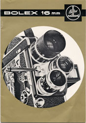
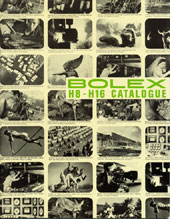
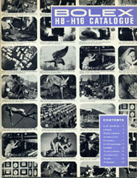
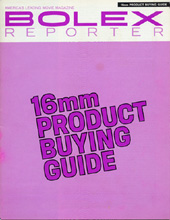
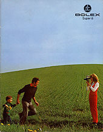
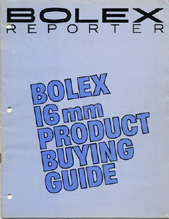

1960s Bolex Catalogs

- Bolex 16mm Catalog
- Content: 17 pages
- Year: 1960
- Language: English
- This brochure sized catalog focuses only on 16mm cameras and equipment, with special attention to the H-16 REX and S-211/221 Projectors. The cover, and content design, is a metallic gold color; not really obvious from the scan, but very reflective and glossy.

- Bolex H8-H16 Catalogue
- Content: 34 pages
- Year: July 1964
- Language: English
- This is a very comprehensive catalog for H-8 and H-16 cameras, as well as their accessories and lenses. These catalogs were aimed at the serious amateur or professional, rather than the home movie maker; as such, the smaller 8mm cameras aren't included. The earliest of this series had glossy covers, made from thick paper stock.

- Bolex H8-H16 Catalogue
- Content: 32 pages
- Year: April 1966
- Language: English
- The H8-H16 series of catalogs were were updated occasionally, throughout the 1960s, to reflect the latest equipment available. Later issues had a slightly different blue cover, as seen in this one from April 1966.

- 16mm Product Buying Guide
- Content: 32 pages
- Year: December 1968
- Language: English
- Described as a "Special Edition" of the Bolex Reporter magazine, these issues were nothing more than a catalog of current H16 cameras, lenses and accessories. They were sent to subscribers of the magazine or obtained for free by writing directly to the offices of Paillard Incorporated in New Jersey.

- Bolex Super 8
- Content: 20 pages
- Year: 1970
- Language: English
- This full color catalog features all Super 8 cameras and projectors current as of 1970. Although it was printed by Bolex International S.A., the Paillard Bolex logo is used on the cover; up to this point, all Super 8 equipment had been manufactured in Switzerland.

- 16mm Product Buying Guide
- Content: 32 pages
- Year: July 1970
- Language: English
- This updated version of the Product Buying Guide for 16mm equipment mainly lists equipment for the professional or serious amateur. The full line of H-16 cameras, lenses and accessories are featured (current as of 1970).